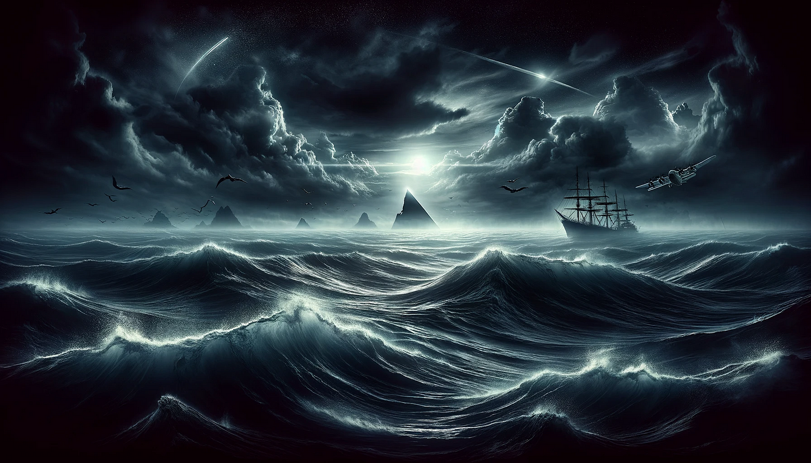

Also known as the "Dragon’s Triangle," the Devil’s Sea is a region of the Pacific Ocean near Japan, shrouded in mystery and unexplained disappearances. Stretching between Japan, the Bonin Islands, and part of the Mariana Trench, this area has been compared to the Bermuda Triangle because of its similar reputation for strange occurrences.
Throughout history, many ships and aircraft have reportedly vanished without a trace in these waters. In the 1950s, Japan declared the Devil’s Sea a danger zone after five military vessels carrying over 700 people disappeared within a short period. Even a research vessel sent to investigate was lost, deepening the legend.
Some believe the area is plagued by supernatural forces, sea monsters, or extraterrestrial activity. Others suggest more scientific explanations like magnetic anomalies, volatile undersea volcanoes, and unpredictable weather conditions.
Despite scientific studies and efforts to map and understand the region, the Devil’s Sea remains a place of fear, fascination, and unanswered questions — a true enigma of the oceans.
← Back to Explore